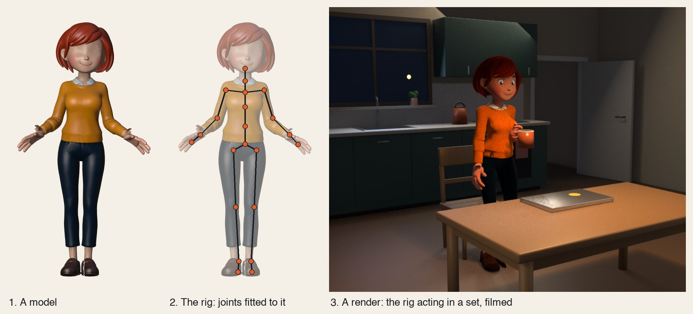
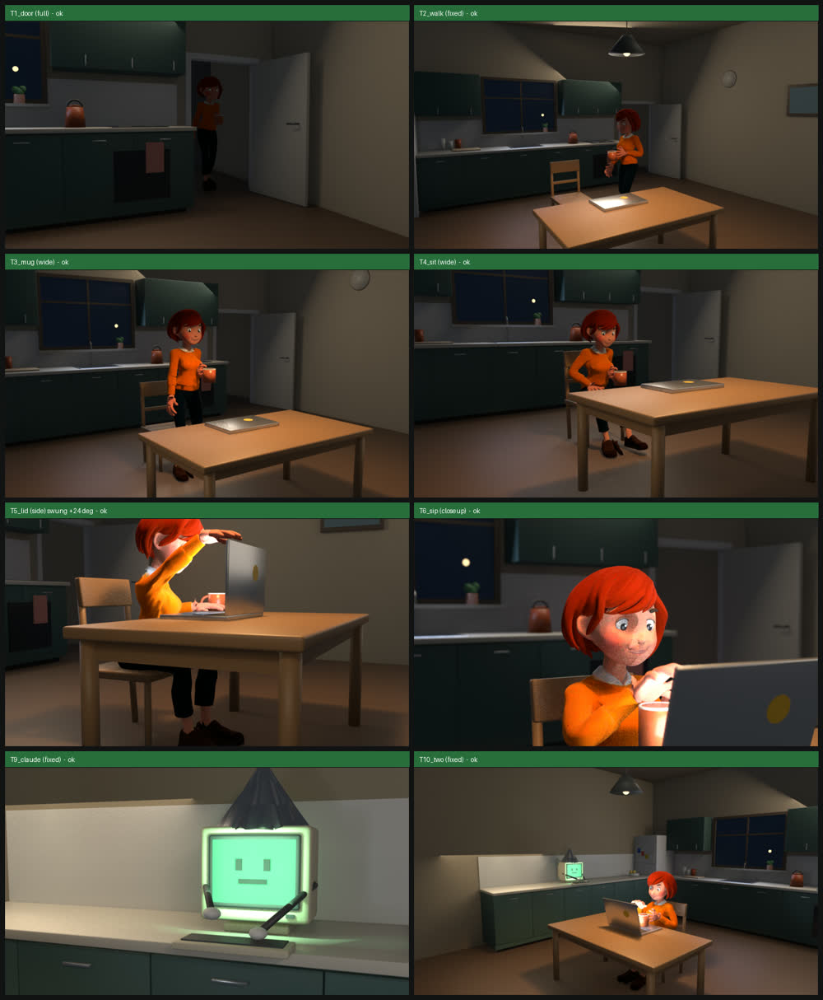
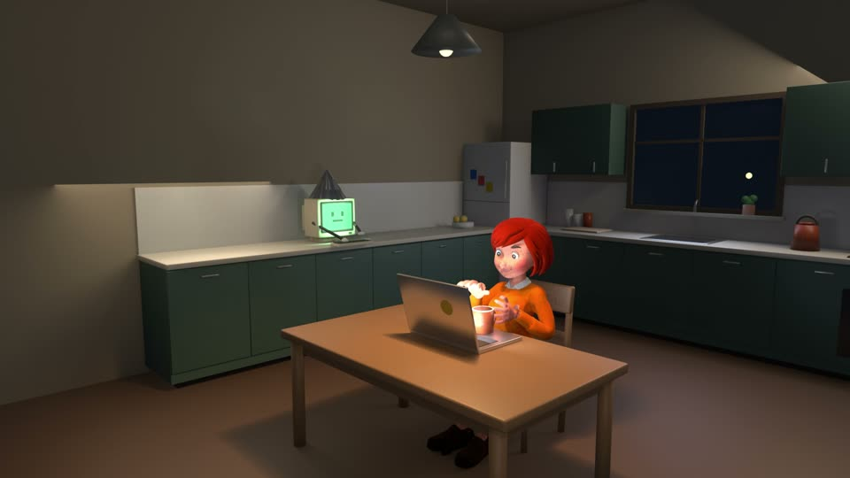

A 3D character that acts on cue
Write what happens as a JSON spec: the shots by type, the acting as verbs. Blender builds the set, checks every camera and the body, and renders. No keyframes and no coordinates.
Why not generate the clip?
An image-to-video model gives you a few seconds of a person who looks about right and does roughly what you asked. It cannot hold a face across twenty shots, put a mug down on a word, or do the same thing again tomorrow. A rigged character can: the same person in every shot, and every move on the frame the spec names.

Model, rig, render
- A model is a shape and its colours. It cannot move. The built-in cast is described in JSON; a fitted character starts as a model from an image-to-3D service.
- The rig makes it a character: joints, a face, fingers, and verbs such as
walk,sit_down,carryandsip. Every character shares it, so a verb written once works on all of them. - A render is one film: the character in a set, acting on cue, drawn frame by frame.

How it works
- Write the spec, or have Claude Code write it from a brief: a set, a cast, shots (
wide,closeup,side) and beats in seconds or on narration words. - Run
check. In seconds it verifies every camera by geometry and measures the body: a hand inside the body, a limb through a table, a sliding foot, a mug that tips. A camera that fails is moved by a solver. You read a contact sheet before anything renders. - Render a whole film with its sound on the motion, or one clip per shot for a Remotion video, transparent if you ask.
- Revise from notes. A film like the trailer takes a few sessions, each started from a prompt the last one wrote, with your notes pasted in.
{"at": 0, "do": "carry", "prop": "cup"},
{"at": "T2_walk+0.1", "do": "walk",
"to": [0, 0.41], "curve": true},
{"at": "T4_sit+0.1", "do": "sit_down"},
{"at": "T4_sit+3.5", "do": "put_down",
"prop": "cup"},
{"at": "T6_sip+1.5", "do": "sip"}
check writes: one still per shot, and what the solver movedWhat it needs
Blender 4.2 or later, which is free, and nothing else in the toolkit depends on it. The limit is your machine. On an Apple M4 a frame at 1080p takes 1.6 seconds for the built-in cast and about 2.2 for a fitted character in a lit room, so the 27-second kitchen example is 25 minutes and a trailer with revisions is an evening. Without a GPU it still renders, far more slowly. Run doctor first: it finds Blender and times a frame on your machine.
It has been run in full on macOS, and the first examples on Linux. Windows is untested. Fitted characters, the kitchen and the lecture hall are experimental: the fit still wants its joints read off a picture by hand.
uv run tools/blender_render.py doctor
ok Blender 5.3.0 at /opt/homebrew/bin/blender
ok ffmpeg
ok test render: 1.60 s/frame at 1920x1080Start
Four examples run from the repository: a character film, a product stage, clips inside a Remotion video, and the kitchen with a fitted character. The format and every verb are in the blender skill; setup, timings and how a film is made over several sessions are in docs/blender.md.
uv run tools/blender_render.py check \
examples/blender-disk-panic/spec.json
# then, in Claude Code:
Make a 20 second 3D short: a developer
finds the disk is full and panics.